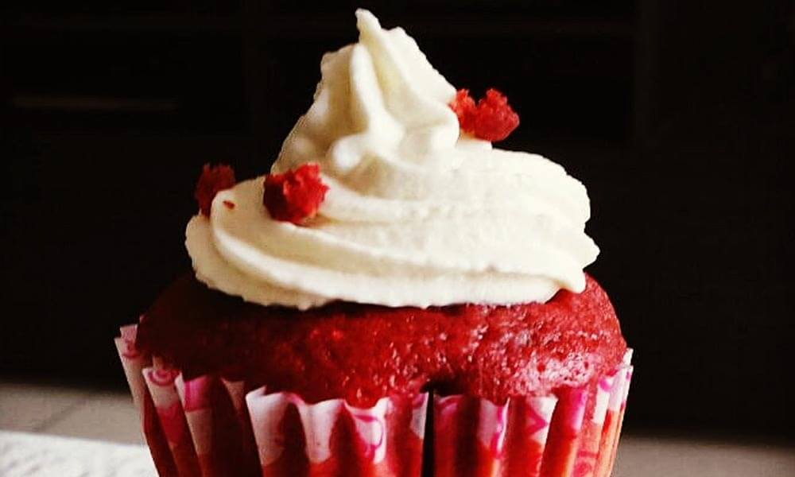

A cupcake (also known as a fairy cake) is a small cake designed to be eaten by one person, baked in a thin paper wrapper, and decorated with frosting on top.
One of the mainstays at Coffee & Cake is our famous Red Velvet Cupcake. A well-guarded recipe combined with the natural ingredients make this little red rascal unapologetically delicious. Topped with decorative vanilla frosting the Red Velvet Cupcake is a favorite among kids as well.